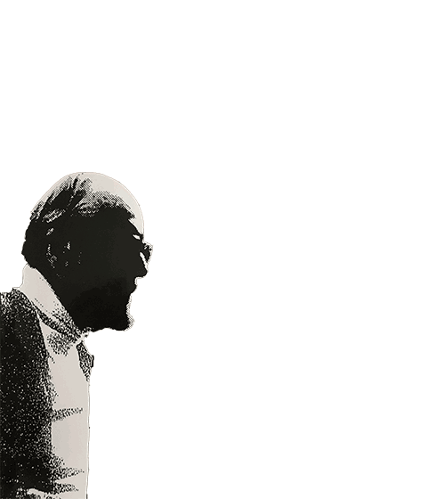
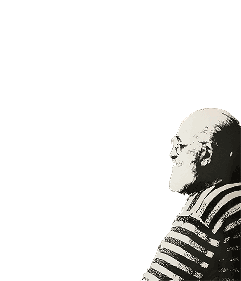

Give one of the gentlemen a kind mouse click ;-)
We must be free; we must be free to believe in freedom. Do you see this paradox? Without freedom it's difficult to understand freedom. On the other hand, we fight for freedom to the extent that we don't have freedom, but in fighting for freedom we discover how freedom is beautiful and difficult to be created, but we have to believe that it's possible.
 